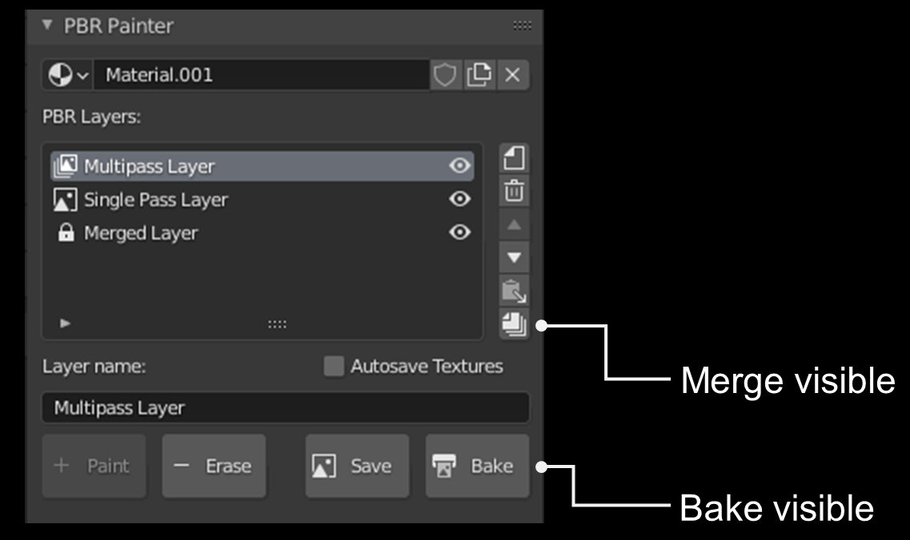

Merge Visible
The merge visible tool, located in the main UI panel, creates a merged layer using all of the visible (i.e. not hidden) layers in the PBR layers list. The new merged layer will replace all of the visible layers and will be locked at the bottom of the layer list. It is therefore advised that you only use this tool when you are entirely happy with the layers being merged and you won't need to make any changes later on.
When you select merge visible, you will see the following popup:

Essentially, merge visible is a smart baking tool that automatically detects which PBR components (albedo, roughness, normals etc) need to be baked in order to reproduce the material exactly. In other words, the algorithm will detect which components to the texture vary between layers, and therefore require a map. All other components will simply be given the constant value associated with the material.
Because the merged layer cannot be modified, it is advised that you select Backup Material (on by default) when merging, as this will backup the current material in case you need to change anything later. Note that this backed up material will dissapear when restarting Blender, however the individual layers will also be stored in the Deleted Layers panel, if you need to access them that way.
As per the image above, you can specify the resolution of the baked textures. This is 4k by default, but you may need to increase this if you have high resolution starting textures and/or you use a high scale value in the mapping. If the resolution is too low, you may lose detail/quality in the merged layer, so you can repeat the process with a higher resolution (assuming you have backed up the material).
As a final note, you will be prompted to open the system console prior to clicking ok. This will let you monitor the progress of the layer merging/baking. Otherwise, Blender will merely freeze until the algorithm is completed.